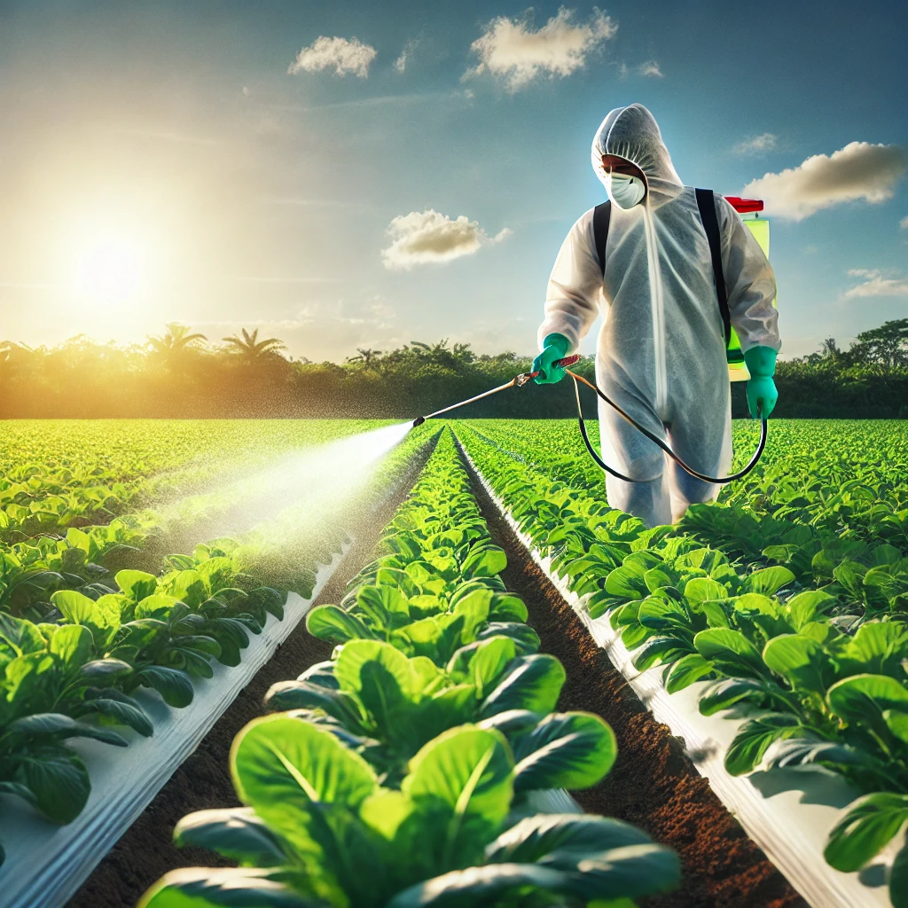

Chemical Use in Agriculture
Chemicals, particularly pesticides, herbicides, and fungicides, play a significant role in modern agriculture. Farmers use these substances to protect crops from insects, weeds, and diseases, aiming to increase crop yields and ensure food security. In India, the use of such chemicals has been on the rise due to the growing demand for food driven by an ever-increasing population. However, while the benefits of pesticides in controlling pests are clear, the downside lies in their overuse, which can lead to negative consequences for both human health and the environment.
The use of chemical pesticides in agriculture began to surge during the Green Revolution in India, which sought to increase food production through modern agricultural practices. While this initiative successfully boosted crop yields, it also resulted in increased dependency on chemical fertilizers and pesticides. These chemicals are often sprayed on crops like fruits, vegetables, and grains to protect them from pests, fungi, and other harmful organisms. However, the downside of this practice is that many of these chemicals remain on the produce as residues, even after harvesting and washing.
Farmers in India face immense pressure to maximize their yield and profits, often leading them to overuse chemicals. This excessive use can cause soil degradation, water pollution, and a decline in biodiversity. For example, many farmers use pesticides without adhering to recommended guidelines or safety practices. This can result in the contamination of nearby water bodies, affecting aquatic life and even drinking water sources for surrounding communities. Moreover, soil health deteriorates over time as beneficial microorganisms are killed, reducing soil fertility.
It's important to recognize that not all chemicals are harmful if used correctly. However, the challenge lies in educating farmers about proper usage and encouraging the adoption of Integrated Pest Management (IPM) practices. IPM focuses on minimizing chemical usage by combining various pest control methods, such as using biological controls, crop rotation, and resistant crop varieties. Educating farmers about safe practices and proper pesticide application can reduce environmental impact and enhance food safety.
